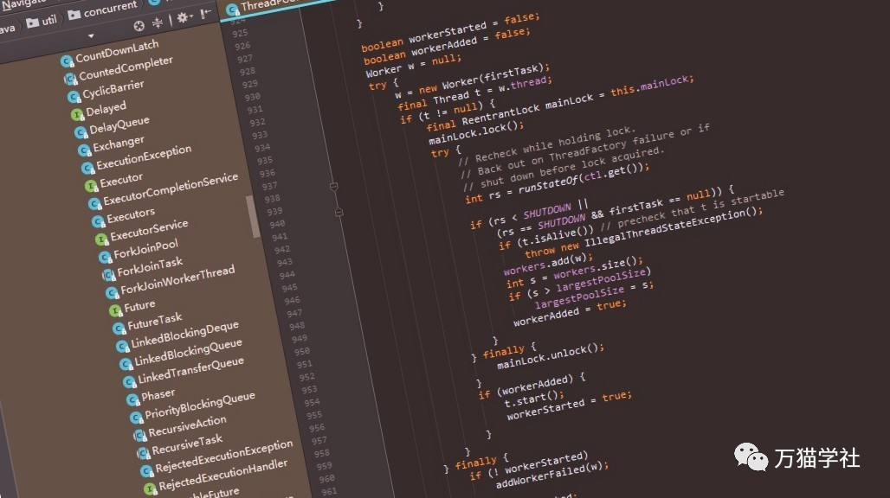

最近在看concurrent包下线程池的源码，当我看到ThreadPoolExecutor类的时候，发现了JDK源码的一个问题。以下是ThreadPoolExecutor类的addWorker方法的代码片段：
boolean workerStarted = false;
boolean workerAdded = false;
Worker w = null;
try {
w = new Worker(firstTask);
final Thread t = w.thread;
if (t != null) {
final ReentrantLock mainLock = this.mainLock;
mainLock.lock();
try {
int rs = runStateOf(ctl.get());
if (rs < SHUTDOWN ||
(rs == SHUTDOWN && firstTask == null)) {
if (t.isAlive()) // precheck that t is startable
throw new IllegalThreadStateException();
workers.add(w);
int s = workers.size();
if (s > largestPoolSize)
largestPoolSize = s;
workerAdded = true;
}
} finally {
mainLock.unlock();
}
if (workerAdded) {
t.start();
workerStarted = true;
}
}
} finally {
if (! workerStarted)
addWorkerFailed(w);
}
return workerStarted;这段代码的功能是完全没有问题的，但是如果使用卫语句，代码的可读性就会更高了。那么什么是卫语句呢？
欢迎关注微信公众号：万猫学社，每周一分享Java技术干货。
条件表达式通常有两种表现形式，第一种形式是：所有分支都属于正常行为；第二种形式则是：条件表达式提供的答案中只有一种是正常行为，其他都是不常见的情况。这两类条件表达式有不同的用途，这一点应该通过代码表现出来。
如果两条分支都是正常行为，就应该使用形如if...else...的条件表达式；如果某个条件极其罕见，就应该单独检查该条件，并在该条件为真时立刻从函数中返回。这样的单独检查常常被称为“卫语句”（guard clauses）。只看概念干巴巴的，不好理解，我们来举两个例子。
欢迎关注微信公众号：万猫学社，每周一分享Java技术干货。
这是一个计算员工薪资的方法，其中以特殊规则处理驻外员工和退休员工的薪资。这些情况不常有，但的确会偶尔出现。
public double getSalary() {
double result;
if (this.isSeparated) {//驻外员工
result = this.separatedSalary();
} else {
if (this.isRetired) {//退休员工
result = this.retiredSalary();
} else {//正常员工
result = this.normalSalary();
}
}
return result;
}这段代码中，非正常情况的检查掩盖了正常情况的检查，所以应该用卫语句来取代这些条件检查，以提高程序清晰度。对于每个检查，放进一个卫语句。卫语句要不就从函数中返回，要不就抛出一个异常。
public double getSalary() {
if (this.isSeparated) {//卫语句
return this.separatedSalary();
}
if (this.isRetired) {//卫语句
return this.retiredSalary();
}
return this.normalSalary();
}欢迎关注微信公众号：万猫学社，每周一分享Java技术干货。
这是一个已知长宽高求长方体体积的方法，但有个特殊的需求：高大于0时，打印万猫学社。（惊不惊喜？意不意外？突不突兀？变不变态？是的，有时候我们接到的需求就是这样的。）代码是这样的：
public double getVolume(double length, double width, double height) {
double result = 0.0;
if (height > 0.0) {
System.out.println("万猫学社");
if (length > 0.0 && width > 0.0) {
result = length * width * height;
}
}
return result;
}还是用卫语句替换条件检查，但是我们需要将相应的条件反转过来，也就是做逻辑非运算。
public double getVolume(double length, double width, double height) {
if (height <= 0.0) {//卫语句，!(height > 0)
return 0.0;
}
System.out.println("万猫学社");
if (length <= 0.0 || width <= 0.0) {//卫语句，!(length > 0 && width > 0)
return 0.0;
}
return length * width * height;
}欢迎关注微信公众号：万猫学社，每周一分享Java技术干货。
卫语句的精髓是：给某一条分支以特别的重视。如果使用if...else...结构，你对if分支和else分支的重视是同等的。这样的代码结构传递给阅读者的消息就是：各个分支有同样的重要性。
卫语句就不同了，它告诉阅读者：“这种情况很罕见，如果它真的发生了，请做一些必要的整理工作，然后退出。”如果对方法剩余部分不再有兴趣，当然应该立刻退出。引导代码的阅读者去看一个没有用的else区段，只会妨碍他们的理解。用了卫语句以后，代码更容易被理解，被维护。
欢迎关注微信公众号：万猫学社，每周一分享Java技术干货。
看了上面的讲解，addWorker方法的代码片段就可以优化为：
boolean workerStarted = false;
boolean workerAdded = false;
Worker w = null;
try {
w = new Worker(firstTask);
final Thread t = w.thread;
if (t == null) {//卫语句
return workerStarted;
}
final ReentrantLock mainLock = this.mainLock;
mainLock.lock();
try {
int rs = runStateOf(ctl.get());
//卫语句
if (rs > SHUTDOWN || (rs == SHUTDOWN && firstTask != null)) {
return workerStarted;
}
if (t.isAlive())// precheck that t is startable
throw new IllegalThreadStateException();
workers.add(w);
int s = workers.size();
if (s > largestPoolSize)
largestPoolSize = s;
workerAdded = true;
} finally {
mainLock.unlock();
}
if (workerAdded) {
t.start();
workerStarted = true;
}
} finally {
if (!workerStarted)
addWorkerFailed(w);
}
return workerStarted;修改后的代码，理解起来是不是更容易了？假如再加入新的功能，可以更容易修改代码。
欢迎关注微信公众号：万猫学社，每周一分享Java技术干货。
这段JDK源码在功能上没有任何问题，架构设计也堪称完美，不过我认为在可读性上还是可以优化的。类似这样的嵌套条件表达式的代码在JDK源码中不止这一处，可能是作者当时没有考虑到使用卫语句，或者没有像我这样的吹毛求疵。希望大家在自己编码过程中，也可以尽量使用卫语句取代嵌套条件表达式，以提高代码的清晰度和可维护性。
欢迎关注微信公众号：万猫学社，每周一分享Java技术干货。
参考文献：《重构：改善既有代码的设计》